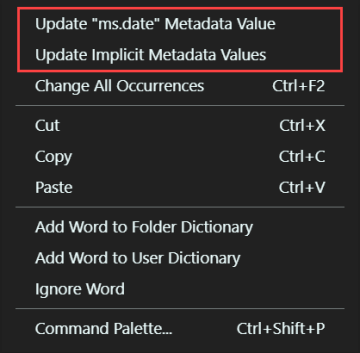

Update metadata
Extension name
The Docs Authoring Pack, Visual Studio Code meta extension is comprised of multiple sub extensions. This feature is included in the Docs Markdown extension. The Docs Markdown extension is part of the Docs Authoring Pack, there is no need to install it separately.
Summary
In a Markdown (*.md) file, there are two contextual menu items specific to metadata. When you right-click anywhere in the text editor, you will see something similar to the following menu items:

Update ms.date metadata value
Selecting the Update ms.date Metadata Value option will set the current Markdown files ms.date value to today's date. If the document does not have an ms.date metadata field, no action is taken.
Update implicit metadata values
Selecting the Update implicit metadata values option will find and replace all possible metadata values that could be implicitly specified. Metadata values are implicitly specified in the docfx.json file, under the build/fileMetadata node. Each key value pair in the fileMetadata node represents metadata defaults. For example, a Markdown file in the top-level/sub-folder directory that omits the ms.author metadata value could implicitly specify a default value to use in the fileMetadata node.
{
"build": {
"fileMetadata": {
"ms.author": {
"top-level/sub-folder/**/**.md": "dapine"
}
}
}
}
In this case, all Markdown files would implicitly take on the ms.author: dapine metadata value. The feature acts on these implicit settings found in the docfx.json file. If a Markdown file contains metadata with values that are explicitly set to something other than the implicit values, they are overridden.
Consider the following Markdown file metadata, where this Markdown file resides in top-level/sub-folder/includes/example.md:
---
ms.author: someone-else
---
# Content
If the Update implicit metadata values option was executed on this file, with the assumed docfx.json content from above the metadata value would be updated to ms.author: dapine.
---
ms.author: dapine
---
# Content
In action
Below is a brief demonstration of this feature.